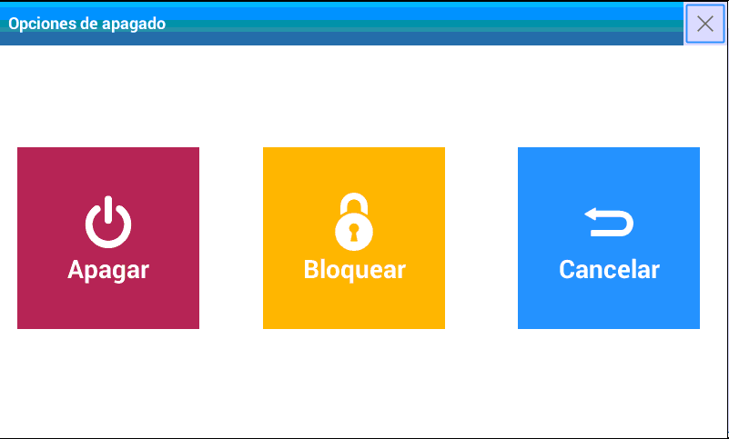

Encender y apagar
Luego de conectar el equipo a la red de alimentación, sólo necesitará presionar la tecla para encenderlo. Una vez realizada esta acción, se ajustará de forma automática la posición de cero (esto puede demorar algunos segundos).
Finalizada esta operación, la balanza estará lista para ser utilizada.
Es importante que el equipo esté estable durante este proceso. Si se toca la bandeja, el proceso comenzará nuevamente. Para apagarla, mantenga presionada la tecla , hasta observar el cartel y sonido de confirmación de apagado.

- Apagar: Apaga el equipo en forma segura
- Bloquear: Permite acceder a una pantalla de patrones para permitir la limpieza del equipo o simplemente no permitir operar con el equipo durante su ausencia
- Cancelar: Retorna a la pantalla principal
- X: Retorna a la pantalla principal